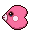
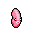
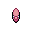

Pokédex / #370

Luvdisc #370
Water
It lives in warm seas. It is said that a couple finding this Pokémon will be blessed with eternal love.
Generation 3 · Hoenn

Stats
| Attack | 30 | |
|---|---|---|
| Defense | 55 | |
| Sp. Atk | 40 | |
| Sp. Def | 65 |
In the wild
| Wild level | 30–40 |
|---|---|
| HP | 43 |
| Experience | 10 |
| Egg groups | Water 2 |
Evolution
- Does not evolve.
Moves
| Level | Move | Type | Category | Power | Energy | Cooldown | Effect | |
|---|---|---|---|---|---|---|---|---|
| 1 | Tackle | Normal | Physical | 15 | 15 | 1s | Tackle is one of the most common and basic moves a Pokemon learns. It deals damage with no additional effects. | |
| 5 | Draining Kiss | Fairy | Special | 50 | 60 | 12s | The user steals the target's HP with a kiss. The user's HP is restored by over half of the damage taken by the target. | |
| 10 | Water Gun | Water | Special | 40 | 45 | 9s | Water Gun inflicts damage and has no secondary effect. | |
| 15 | Heart Stamp | Psychic | Special | 60 | 70 | 20s | The user unleashes a vicious blow after its cute act makes the target less wary. This may also make the target flinch. | |
| 20 | Sweet Kiss | Fairy | Status | – | 60 | 20s | Sweet Kiss causes the target to become confused. | |
| 25 | Take Down | Normal | Physical | 90 | 90 | 14s | Take Down deals damage and has no secondary effect. | |
| 30 | Scald | Water | Special | 80 | 90 | 19s | The user shoots boiling hot water at its target. This may also leave the target with a burn. | |
| 35 | Aqua Ring | Water | Status | – | 100 | 120s | The user surrounds itself with a veil of water, allowing it to restore 1/16 of its max HP at the end of every turn during 16 turns. | |
| 40 | Ice Beam | Ice | Special | 90 | 100 | 22s | Ice Beam inflicts damage and has a 10% chance of freezing the target. | |
| 45 | Surf | Water | Special | 90 | 100 | 21s | Surf inflicts damage and has no secondary effect. | |
| 50 | Double Team | Normal | Status | – | 150 | 90s | Double Team increases the user's speed into maximum, creating illusions. | |
| 55 | Flail | Normal | Physical | 100 | 100 | 18s | Flail inflicts damage. Its power is higher when the user's HP is lower. | |
| 60 | Hydro Pump | Water | Special | 110 | 120 | 27s | Hydro Pump inflicts damage and has no secondary effect. | |
| 65 | Waterfall | Water | Physical | 80 | 90 | 15s | Waterfall does damage and has a 20% chance of causing the target to flinch. | |
| 70 | Brine | Water | Special | 65 | 80 | 15s | Brine inflicts damage, and its power doubles to 130 when the target is at or below 50% health. |
Field abilities
SurfDiveWaterfall
Special abilities
Swift Swim
Egg moves
Water SportSupersonicSplashMud SportHeal PulseBrineAqua RingAqua Jet
Technical machines
BlizzardDouble TeamHailIce BeamProtectRain DanceRestSafeguardSubstituteToxic
Drops
| Item | Amount | Chance | |
|---|---|---|---|
| water gem | 1–3 | 100% | |
| razor fang | 1 | 28.6% | |
| pot of water | 1 | 8% | |
| onigiri | 1–5 | 5% | |
| cutting fang | 1 | 4% | |
 | luvdisc doll | 1 | 0.1% |
| TM 12 | 1 | 0.005% | |
| Splash Plate | 1 | 0.002% |